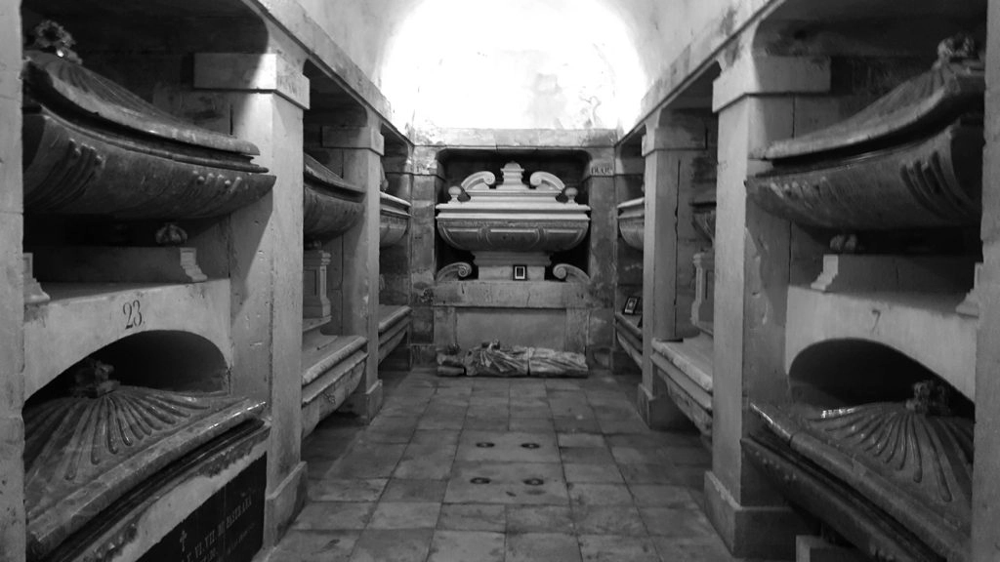

1. Introducción y origen
Don Diego de Bernuy fue un importante personaje de la historia española del siglo XVI. Perteneció a una familia que destacó por su riqueza, sus negocios y su influencia social y política. Los Bernuy consiguieron alcanzar una posición privilegiada gracias a sus actividades comerciales y a la adquisición de importantes propiedades. La familia estuvo especialmente relacionada con la ciudad de Burgos, donde desarrolló gran parte de sus actividades económicas. Con el paso del tiempo, consiguió aumentar su prestigio y convertirse en uno de los linajes destacados de la época.
2. Su vida, matrimonio y familia
Uno de los aspectos más importantes de la historia de Don Diego de Bernuy fue su relación con Benamejí, una localidad situada en la provincia de Córdoba. La adquisición del señorío permitió a su familia ampliar sus propiedades y aumentar su influencia en la zona. Don Diego estuvo casado con Doña Guiomar Barba de Acuña. Juntos formaron una familia cuyos descendientes continuaron transmitiendo el apellido, las propiedades y el prestigio de los Bernuy. Sus hijos y nietos contribuyeron a mantener la importancia del linaje durante las siguientes generaciones.
Familia:
- Don Diego de Bernuy
- Guiomar Barba de Acuña y Cuzanza
- Diego de Bernuy y Barba: Heredó el señorío de Benamejí.
- Hernando de Bernuy y Barba.
- Pedro Enrique Diego de Bernuy y Barba de Acuña.
- María de Bernuy y Barba.
- Catalina María Isabel de Bernuy y Barba de Acuña.
- Leonor de Bernuy y Barba.
- Juana Paula Teresa de Bernuy y Barba.
- Mariana Conrada de Bernuy y Barba.
- Guiomar Inés de Bernuy y Barba.

3. Su legado e importancia histórica
La historia de Don Diego de Bernuy permite conocer cómo algunas familias consiguieron ascender socialmente gracias a su riqueza, sus negocios y sus relaciones. Su vinculación con Burgos y Benamejí representa una parte importante de la historia de ambas localidades.
"Su familia dejó un legado relacionado con el patrimonio, las propiedades y la evolución social de estos territorios."
En definitiva, Don Diego de Bernuy fue una figura importante para comprender el crecimiento y el prestigio de su familia durante el siglo XVI.